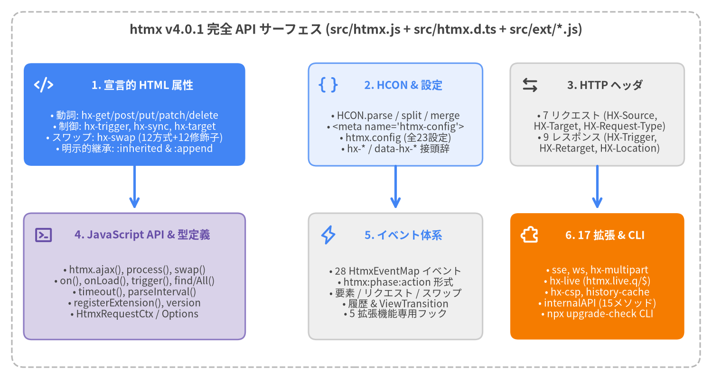

htmx v4.0.1 API 全体概要
htmx v4.0.1（htmx.org@4.0.1）は、外部依存ゼロ・fetch() ベースのハイパーメディアライブラリです。標準 HTML を宣言的なリクエスト属性、組み込み DOM モーフィング、明示的な属性継承、コロン区切りのライフサイクルイベント、およびイベント駆動のモジュラー拡張アーキテクチャで拡張します。
本 API リファレンスカタログ では、htmx v4.0.1 に同梱されるすべての HTML 属性、修飾子、HCON 式構文、HTTP リクエスト／レスポンスヘッダ、JavaScript API メソッド、TypeScript 型定義（src/htmx.d.ts）、設定プロパティ、DOM／拡張イベントフック、公式拡張機能（src/ext/*.js）、および CLI マイグレーションツールをソースコードに基づき網羅的に解説します。
| カテゴリ | カタログページ | 主な対象シンボル・スコープ |
|---|---|---|
| 全体概要 & HCON | 00_overview.md |
dist/htmx.js, dist/htmx.esm.js, dist/htmx.min.js, dist/htmax.js, dist/htmx.d.ts, HCON.parse, HCON.split, HCON.merge, hx-*, data-hx-* |
| コアリクエスト属性 | 01_core_request_attributes.md |
hx-get, hx-post, hx-put, hx-patch, hx-delete, hx-query, hx-action, hx-method |
| トリガー＆同期属性 | 02_trigger_and_sync_attributes.md |
hx-trigger（修飾子, [filter], every, load, revealed, intersect）, hx-sync, hx-confirm |
| ターゲット＆スワップ属性 | 03_target_and_swap_attributes.md |
hx-target, hx-swap（12 スワップ方式 + 12 修飾子）, hx-swap-oob, <hx-partial>, hx-select, hx-select-oob, hx-morph-skip, hx-morph-skip-children, hx-preserve |
| データ＆設定属性 | 04_data_and_config_attributes.md |
hx-vals, hx-headers, hx-include, hx-encoding, hx-validate, hx-config, hx-status:XXX |
| UX・履歴＆制御属性 | 05_ux_history_and_control_attributes.md |
hx-boost, hx-push-url, hx-replace-url, hx-history-elt, hx-indicator, hx-disable, hx-ignore, hx-on:*, :inherited, :append |
| HTTP ヘッダ | 06_http_headers.md |
リクエスト（HX-Request, HX-Source, HX-Target, HX-Current-URL, HX-Request-Type, HX-Boosted, HX-History-Restore-Request）＆レスポンス（HX-Trigger, HX-Push-Url, HX-Replace-Url, HX-Redirect, HX-Location, HX-Refresh, HX-Retarget, HX-Reswap, HX-Reselect） |
| JavaScript API | 07_javascript_api.md |
htmx.ajax(), htmx.process(), htmx.initialize(), htmx.swap(), htmx.on(), htmx.onLoad(), htmx.trigger(), htmx.find(), htmx.findAll(), htmx.timeout(), htmx.parseInterval(), htmx.registerExtension(), htmx.version, TypeScript インターフェース |
| 設定オプション | 08_configuration_options.md |
<meta name="htmx-config">, htmx.config（HtmxConfig: 全 23 プロパティ）, CSS ステートクラス（htmx-request, htmx-indicator, htmx-swapping, htmx-settling, htmx-added） |
| イベントリファレンス | 09_events_reference.md |
28 種の HtmxEventMap DOM イベント（htmx:phase:action）＆ 5 種の拡張専用フック（htmx_before_morph_node, htmx_before_morph_attr, htmx_after_implicitInheritance, htmx_process_<type>, handle_swap） |
| ストリーミング＆通信拡張 | 10_extensions_streaming_and_net.md |
hx-sse (sse), hx-ws (ws), hx-multipart (hx-multipart), hx-preload (preload), hx-ptag (ptag), hx-download (download) |
| リアクティブ＆DOM拡張 | 11_extensions_reactive_and_dom.md |
hx-live & htmx.live（q/$, HxLive.*, take, toggle, debounce, refresh, forEvent, nextFrame）, hx-targets, hx-upsert, hx-head, hx-pending, hx-browser-indicator |
| セキュリティ・互換＆CLI | 12_extensions_security_compat_and_cli.md |
hx-csp, hx-history-cache, hx-prompt, hx-alpine-compat, htmx-2-compat, internalAPI（全 15 メソッド）, CLI upgrade-check |

Source Code
from drawlib.canvas import save, setup
from drawlib.icons import phosphor
from drawlib.lines import line
from drawlib.shapes import rectangle
from drawlib.styles import Styles
from drawlib.text import text
setup(width=180, height=96, dpi=150)
# Outer frame
rectangle((90, 48), width=174, height=90, style=Styles.MutedDashed.patch(shape_r=3.0))
text((90, 88.5), "htmx v4.0.1 完全 API サーフェス (src/htmx.js + src/htmx.d.ts + src/ext/*.js)", style=Styles.DarkBold.patch(text_size=13.0))
# Top Row: Declarative HTML Attributes & HCON Parser
rectangle((34, 67), width=56, height=26, style=Styles.PrimaryFlat.patch(shape_r=2.0))
phosphor.code((11, 74.5), width=4.8, style=Styles.WhiteBold)
text((36, 74.5), "1. 宣言的 HTML 属性", style=Styles.WhiteBold.patch(text_size=11.0))
text((34, 62.5), "• 動詞: hx-get/post/put/patch/delete\n• 制御: hx-trigger, hx-sync, hx-target\n• スワップ: hx-swap (12方式+12修飾子)\n• 明示的継承: :inherited & :append", style=Styles.White.patch(text_size=10.0))
rectangle((100, 67), width=44, height=26, style=Styles.PrimaryNeutral.patch(shape_r=2.0))
phosphor.brackets_curly((83, 74.5), width=4.8, style=Styles.PrimaryBold)
text((102, 74.5), "2. HCON & 設定", style=Styles.PrimaryBold.patch(text_size=11.0))
text((100, 62.5), "• HCON.parse / split / merge\n• <meta name='htmx-config'>\n• htmx.config (全23設定)\n• hx-* / data-hx-* 接頭辞", style=Styles.Dark.patch(text_size=10.0))
rectangle((151, 67), width=44, height=26, style=Styles.Neutral.patch(shape_r=2.0))
phosphor.arrows_left_right((134, 74.5), width=4.8, style=Styles.DarkBold)
text((153, 74.5), "3. HTTP ヘッダ", style=Styles.DarkBold.patch(text_size=11.0))
text((151, 62.5), "• 7 リクエスト (HX-Source,\n HX-Target, HX-Request-Type)\n• 9 レスポンス (HX-Trigger,\n HX-Retarget, HX-Location)", style=Styles.Dark.patch(text_size=10.0))
# Arrows down to Bottom Row
line((34, 54), (34, 43), arrow_head="->", style=Styles.PrimaryBold)
line((100, 54), (100, 43), arrow_head="->", style=Styles.PrimaryBold)
line((151, 54), (151, 43), arrow_head="->", style=Styles.PrimaryBold)
# Bottom Row: JS API, Events, Extensions & CLI
rectangle((34, 26), width=56, height=32, style=Styles.SecondaryNeutral.patch(shape_r=2.0))
phosphor.terminal_window((11, 36.5), width=4.8, style=Styles.SecondaryBold)
text((36, 36.5), "4. JavaScript API & 型定義", style=Styles.SecondaryBold.patch(text_size=11.0))
text((34, 22.0), "• htmx.ajax(), process(), swap()\n• on(), onLoad(), trigger(), find/All()\n• timeout(), parseInterval()\n• registerExtension(), version\n• HtmxRequestCtx / Options", style=Styles.Dark.patch(text_size=10.0))
rectangle((100, 26), width=44, height=32, style=Styles.Neutral.patch(shape_r=2.0))
phosphor.lightning((83, 36.5), width=4.8, style=Styles.PrimaryBold)
text((102, 36.5), "5. イベント体系", style=Styles.PrimaryBold.patch(text_size=11.0))
text((100, 22.0), "• 28 HtmxEventMap イベント\n• htmx:phase:action 形式\n• 要素 / リクエスト / スワップ\n• 履歴 & ViewTransition\n• 5 拡張機能専用フック", style=Styles.Dark.patch(text_size=10.0))
rectangle((151, 26), width=44, height=32, style=Styles.AccentFlat.patch(shape_r=2.0))
phosphor.puzzle_piece((134, 36.5), width=4.8, style=Styles.WhiteBold)
text((153, 36.5), "6. 17 拡張 & CLI", style=Styles.WhiteBold.patch(text_size=11.0))
text((151, 22.0), "• sse, ws, hx-multipart\n• hx-live (htmx.live.q/$)\n• hx-csp, history-cache\n• internalAPI (15メソッド)\n• npx upgrade-check CLI", style=Styles.White.patch(text_size=10.0))
save()
パッケージエクスポート＆配布バンドル#
htmx.org@4.0.1 npm パッケージは、src/htmx.js および src/ext/*.js をビルドして dist/ 配下に 5 種類の主要アーティファクトを生成します。ビルド時（npm run build:iife / npm run build:esm）には、src/htmx.js 内の __ 接頭辞メソッドが ECMAScript ネイティブの # プライベートクラスフィールドへ変換されます。
| アーティファクト | package.json フィールド |
フォーマット | 説明 |
|---|---|---|---|
dist/htmx.js |
"main" |
IIFE (var htmx) |
window.htmx を定義する非圧縮ブラウザスクリプト（# プライベートフィールド化済み）。 |
dist/htmx.esm.js |
"module" |
ES Module (export default htmx) |
バンドラ（Vite, Rollup, Webpack）および <script type="module"> 向け ESM ビルド。 |
dist/htmx.min.js |
"jsdelivr", "unpkg" |
圧縮 IIFE + .map + .br |
Terser 圧縮済み本番用バンドル（ESM 版 dist/htmx.esm.min.js も同梱）。 |
dist/htmax.js |
オールインワンバンドル | IIFE (4.0.1-htmax) |
htmx.js コアと主要 11 拡張機能を 1 ファイルに統合したバンドル（dist/htmax.min.js 同梱）。 |
dist/htmx.d.ts |
"types" |
TypeScript 型定義 | 完全な TypeScript 型宣言（Htmx, HtmxConfig, HtmxEventMap, HxLive）。 |
dist/htmx.js#
Htmx シングルトン（var htmx = (() => { ... return new Htmx() })()）を生成する非圧縮 IIFE バンドルです。ビルド工程（npm run build:iife）において sed により内部の __ 識別子（__proto__ を除く）が # プライベートフィールドへ置換され、#internalAPI・#Function・#AsyncFunction・#ttPolicy・#transitionQueue などの内部状態が言語レベルでカプセル化されます。
<!-- ローカル開発環境での非圧縮 IIFE ビルドの読み込み -->
<script src="/dist/htmx.js"></script>
dist/htmx.esm.js#
標準 ECMAScript モジュール配布物（npm run build:esm）です。コアバンドルの末尾に if (typeof window !== "undefined") window.htmx = htmx; export default htmx; が付加されており、バンドラからの import とインライン hx-on:* ハンドラの双方から htmx を参照できます。
import htmx from 'htmx.org';
htmx.config.transitions = true;
htmx.ajax('GET', '/api/dashboard', '#main-panel');
dist/htmx.min.js#
Terser（--compress --mangle --source-map）による圧縮および Brotli 事前圧縮（dist/htmx.min.js.br）を施した本番用 IIFE バンドル（npm run build:minify）です。package.json の "jsdelivr" および "unpkg" フィールドにより CDN のデフォルト配信ファイルとして指定されています。
<script src="https://cdn.jsdelivr.net/npm/htmx.org@4.0.1/dist/htmx.min.js"></script>
dist/htmax.js#
コア dist/htmx.js と人気の公式拡張機能 11 種を 1 ファイルに結合したオールインワン配布物（npm run build:htmax、圧縮版は dist/htmax.min.js）です。htmx.version に "-htmax"（"4.0.1-htmax"）を付加し、sessionStorage 履歴キャッシュをオプトインとするため htmx.config.historyCache ??= { disable: true } を初期設定します。
| 同梱される拡張ファイル | 登録名 (registerExtension) |
htmax.js における役割 |
|---|---|---|
dist/ext/hx-sse.js |
sse |
Server-Sent Events (text/event-stream) ストリーミング |
dist/ext/hx-ws.js |
ws |
双方向 WebSocket ストリーミング＆フォーム送信 |
dist/ext/hx-preload.js |
preload |
ホバー／mousedown／touchstart 時の GET 先読みキャッシュ |
dist/ext/hx-browser-indicator.js |
browser-indicator |
Navigation API を用いたブラウザタブ標準スピナー表示 |
dist/ext/hx-download.js |
download |
ストリーミングファイルダウンロード（hx-swap="download", HX-Download） |
dist/ext/hx-pending.js |
hx-pending |
リクエスト通信中のペンディング <template> プレースホルダ表示 |
dist/ext/hx-targets.js |
hx-targets |
複数要素への一括スワップ配信（hx-targets=".card"） |
dist/ext/hx-live.js |
hx-live |
リアクティブ DOM スクリプティング（hx-live, :attr, htmx.live.q） |
dist/ext/hx-history-cache.js |
history-cache |
sessionStorage LRU 履歴キャッシュ（htmax.js では既定無効、historyCache.disable:false で有効化） |
dist/ext/hx-upsert.js |
upsert |
キー／ソート付き更新・挿入スワップ方式（hx-swap="upsert"） |
dist/ext/hx-alpine-compat.js |
alpine-compat |
モーフ・スワップ時の Alpine.js リアクティブ状態保持 |
<!-- 単一スクリプトで htmx コア + 11 拡張機能を一括ロード -->
<script src="/dist/htmax.min.js"></script>
<meta name="htmx-config" content="historyCache.disable:false">
dist/htmx.d.ts#
公式 TypeScript 型宣言ファイル（src/htmx.d.ts から dist/htmx.d.ts へコピー）です。Htmx インターフェース、HtmxConfig、HtmxRequestCtx、HtmxRequestOptions、HtmxResponse、HtmxSwapContext、HtmxAjaxOptions、HtmxHistoryDetail、HtmxEventMap、HtmxEvent<K>、および HxLive 名前空間をエクスポートし、グローバルな HTMLElementEventMap・DocumentEventMap・WindowEventMap を拡張して addEventListener() や htmx.on() に完全な型推論を提供します。
import htmx, { type HtmxEvent, type HtmxRequestCtx } from 'htmx.org';
htmx.on('htmx:config:request', (evt: HtmxEvent<'htmx:config:request'>) => {
const ctx: HtmxRequestCtx = evt.detail.ctx;
ctx.request.headers['X-Client-Version'] = htmx.version;
});
HCON (htmx Configuration Object Notation)#
HCON は、<meta name="htmx-config">、hx-config、hx-vals、hx-headers、hx-status:XXX、hx-swap、hx-trigger、HX-Location、HX-Trigger で共通採用されている htmx v4 の簡潔な設定オブジェクト記法です。{ で始まる文字列はそのまま JSON.parse() で解析されるため、HCON は JSON オブジェクトの完全上位互換でありながら、HTML 属性内での波括弧や引用符の記述を大幅に削減できます。
| メソッド・機能 | シグネチャ | 説明 |
|---|---|---|
HCON.parse |
HCON.parse(string: string): Record<string, any> |
HCON 文字列または JSON 文字列をネストされた JavaScript オブジェクトへ解析します。 |
HCON.split |
HCON.split(string: string): string[] |
[], (), <.../>, "...", '...' 内のカンマを保護しつつトップレベルのカンマで分割します。 |
HCON.merge |
HCON.merge(source: string | object, target: object): object |
プロトタイプ汚染を防ぎながら HCON 文字列またはオブジェクトを target にディープマージします。 |
HCON.parse#
HCON.parse(string: string): Record<string, any>
HCON 文字列または JSON オブジェクトリテラルをプレーンな JavaScript オブジェクトへ解析します。拡張機能には internalAPI.HCON.parse として公開されます（htmx インスタンス内部では #HCON.parse）。
| 文法ルール | 記述形式 | 解析結果の例 | 備考 |
|---|---|---|---|
| 空文字列／Falsy | "" または null / undefined |
{} |
新しい空オブジェクトを返します。 |
| JSON パススルー | '{"defaultSwap": "outerHTML"}' |
{ defaultSwap: "outerHTML" } |
{ で始まる文字列は JSON.parse(string) に直接委譲されます。 |
| 空白・カンマ区切り | 'swap:100ms, settle:200ms' または 'swap:100ms settle:200ms' |
{ swap: "100ms", settle: "200ms" } |
キー・値ペアは空白、カンマ、またはその両方で区切ることができます。 |
暗黙の真偽値 true |
'once changed prevent' |
{ once: true, changed: true, prevent: true } |
:value を省略した裸のキーは値が true になります。 |
| JSON 型自動変換 | 'count:5 active:true ratio:0.5' |
{ count: 5, active: true, ratio: 0.5 } |
値は可能な限り JSON.parse() で数値・真偽値に変換され、それ以外は文字列となります。 |
| ドット記法の展開 | 'sse.reconnectDelay:1000' |
{ sse: { reconnectDelay: 1000 } } |
裸のキーに含まれる . はネストされたオブジェクトに展開され、HCON.merge() で統合されます。 |
| 引用符付きキー | '"a.b":1' または '\"X-CSRF-Token\":\"abc\"' |
{ "a.b": 1 } |
ダブル／シングルクォートで囲んだキーはドットや空白・コロンをそのまま保持します。 |
引用符＆ <.../> 値 |
'from:<form input, select/>' |
{ from: "form input, select" } |
空白やカンマを含む値は "..."、'...'、または hyperscript 風の <.../> で囲みます。 |
<!-- <meta name="htmx-config"> における等価な HCON と JSON の記述 -->
<meta name="htmx-config" content="defaultSwap:outerMorph, transitions:true, live.inputDebounce:150">
<meta name="htmx-config" content='{"defaultSwap":"outerMorph","transitions":true,"live":{"inputDebounce":150}}'>
HCON.split#
HCON.split(string: string): string[]
カンマ区切りの指定文字列（hx-trigger の複数トリガーや hx-target / hx-include の複数セレクタなど）を、先読み正規表現 /,(?![^\[]*\])(?![^(]*\))(?![^<]*\/>)(?=(?:[^"']|"[^"]*"|'[^']*')*$)/ によってトップレベルのカンマのみで分割します。
| 保護される区切り記号 | 入力例 | HCON.split() の戻り値 |
|---|---|---|
角括弧 [...] |
'click[a, b], keyup[key=="Enter"]' |
['click[a, b]', ' keyup[key=="Enter"]'] |
丸括弧 (...) |
'find :is(.a, .b), closest div' |
['find :is(.a, .b)', ' closest div'] |
山括弧 <.../> |
'from:<.btn, .link/>, load' |
['from:<.btn, .link/>', ' load'] |
引用符 "..." / '...' |
'from:".a, .b", every 2s' |
['from:".a, .b"', ' every 2s'] |
// htmx 拡張機能の init(api) フック内での利用例:
const parts = api.HCON.split('input changed delay:300ms, keyup[key=="Enter"]');
// -> ['input changed delay:300ms', ' keyup[key=="Enter"]']
HCON.merge#
HCON.merge(source: string | Record<string, any>, target: Record<string, any>): Record<string, any>
source（文字列の場合は先に HCON.parse(source) で解析）を target オブジェクトへ再帰的にディープマージし、target を返します。
| 挙動 | 仕様詳細 |
|---|---|
| 再帰的オブジェクトマージ | source[key] と target[key] の双方がプレーンオブジェクト（val?.constructor === Object）である場合は再帰的にマージし、それ以外は target[key] = val で上書きします。 |
| プロトタイプ汚染防止 | '__proto__'、'constructor'、'prototype' キーは無条件でスキップされます。 |
// HCON 文字列を既存の設定オブジェクトへディープマージ
const target = { sse: { reconnect: true, reconnectDelay: 500 } };
api.HCON.merge('sse.reconnectDelay:2000, transitions:true', target);
// target -> { sse: { reconnect: true, reconnectDelay: 2000 }, transitions: true }
属性接頭辞 (hx-* & data-hx-*)#
htmx v4 は初期状態で 2 種類の属性接頭辞を同時にサポートします。プライマリ接頭辞の hx- と、設定変更可能なセカンダリ接頭辞（htmx.config.prefix、デフォルトは "data-hx-"）です。
| 接頭辞形式 | 制御する設定 | 変更可能タイミング | 使用例 |
|---|---|---|---|
hx-* |
組み込みプライマリ接頭辞（常時有効） | 常時有効 | hx-get="/items", hx-target:inherited="#list" |
data-hx-* |
htmx.config.prefix（既定値: "data-hx-"） |
起動時のみ（<meta name="htmx-config">） |
data-hx-get="/items", data-hx-target:inherited="#list" |
hx-*#
<button hx-post="/items" hx-target="#item-list" hx-swap="beforeend">Add Item</button>
内部の #attr(elt, name) および #prefixSelector(s) が最初に検査する標準接頭辞です。すべてのコア属性（hx-get, hx-trigger, hx-swap, hx-on:*, hx-status:* など）および拡張属性（hx-sse:connect, hx-ws:connect, hx-live, hx-preload など）で利用できます。
data-hx-*#
<button data-hx-post="/items" data-hx-target="#item-list" data-hx-swap="beforeend">Add Item</button>
HTML5 バリデータに準拠するセカンダリ接頭辞であり、htmx.config.prefix = "data-hx-" によりデフォルトで有効です。内部の #actionSelector および #hxOnQuery（XPathEvaluator）はスクリプト読み込み時の new Htmx() コンストラクタ内で構築されるため、prefix の変更や無効化（prefix:""）は必ず <meta name="htmx-config"> で行う必要があります。
<!-- data-hx-* の検索を無効化、または別のカスタム接頭辞へ変更 -->
<meta name="htmx-config" content='prefix:""'>
ポータル間リンク（4ポータル構成）#
本 API リファレンスカタログは、https://htmx.drawlib.com/ で公開されている htmx v4.0.1 4ポータル構成の Portal 2 です。
| ポータル | URL | 内容・対象読者 |
|---|---|---|
| Portal 1: htmx v4 ユーザーガイド | https://htmx.drawlib.com/ |
ハイパーメディア駆動アプリケーション（HDA）の実践ガイド、UI パターン、モーフィング活用、htmx 2 $\rightarrow$ 4 移行手順。 |
| Portal 2: htmx v4 API リファレンスカタログ | https://htmx.drawlib.com/api/ |
全属性・修飾子・HTTP ヘッダ・JS メソッド・イベント・拡張機能・CLI の日英完全辞書（本ポータル）。 |
| Portal 3: htmx v4 内部アーキテクチャガイド | https://htmx.drawlib.com/architecture/ |
src/htmx.js の内部実装解説：HCON、RequestQueue、fetch() パイプライン、Idiomorph エンジン、#internalAPI。 |
| Portal 4: PNI501 診断・アーキテクチャ監査レポート | https://htmx.drawlib.com/reports/pni501/ |
15 ステージ JavaScript AST 解析、依存関係 DAG、@web/test-runner V8 カバレッジ、サプライチェーン監査レポート（HTML & PDF）。 |